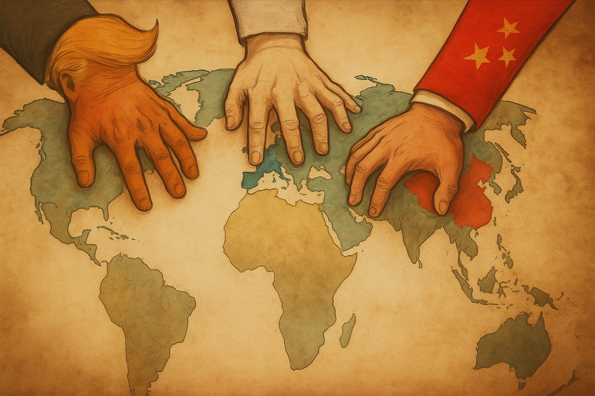

Publicado em 2025-05-17 10:26:00
O mundo está a ser redesenhado — não por tratados, mas por ambição bruta. Enquanto as placas tectónicas da geopolítica se movem com violência, a Europa dorme com o peso dos seus fantasmas e a ilusão do seu passado imperial.
Estamos a assistir a uma nova Guerra Fria — mas com menos ideologia e mais transações.
Uma era de capitalismo armado, de autoritarismo estratégico e de alianças voláteis.
E no centro deste novo xadrez, três peças dominam o tabuleiro:
Donald Trump não vê o mundo como um sistema de equilíbrios, mas como um campo de negócios.
Para ele, alianças não são valores, são contratos:
Com Trump de volta ao palco internacional, os EUA transformam-se numa potência ainda mais pragmática, transacional e unilateral.
A NATO, a ONU, a ordem liberal?
Meros obstáculos à liberdade de negociação americana.
Putin não quer dominar o mundo.
Quer rever o mapa da humilhação soviética, corroer a coesão ocidental e manter um império de influência baseado em gás, exércitos privados e desinformação.
A guerra na Ucrânia não é só sobre território.
É uma declaração:
“O Ocidente já não manda. A Rússia não se ajoelha.”
Putin sabe que o tempo joga a seu favor — porque a Europa está dividida e os EUA só olham para dentro.
Enquanto o Ocidente discute género, política identitária e déficit democrático, a China constrói infraestruturas, compra minérios, domina cadeias de valor.
Não precisa de invadir países.
Compra-os.
Com crédito, influência, tecnologia e vigilância.
O plano é claro:
E o Ocidente?
Discute regulações. Enquanto a China fabrica o futuro.
A Europa perdeu o apetite pela História.
Transformou-se num condomínio bem regulamentado, que debate muito e executa pouco.
Não tem uma política externa comum.
Não tem defesa comum.
Não tem ambição global.
Faz conferências sobre democracia digital…
enquanto Trump e Putin fazem planos de poder real.
E Portugal?
Tem voz apenas quando é para elogiar os outros.
Não constrói alianças, não lidera causas, não antecipa riscos.
Estamos, como sempre, no lado certo da História — mas no banco de trás, de braços cruzados.
O mundo está a mudar. E depressa.
Se a Europa (e Portugal com ela) não quiser tornar-se apenas um museu do século XX com turistas do XXI, terá de:
Porque hoje, quem não tem força, não tem voz.
E quem não tem voz… desaparece da História.
Por Francisco Gonçalves in Fragmentos de Caos